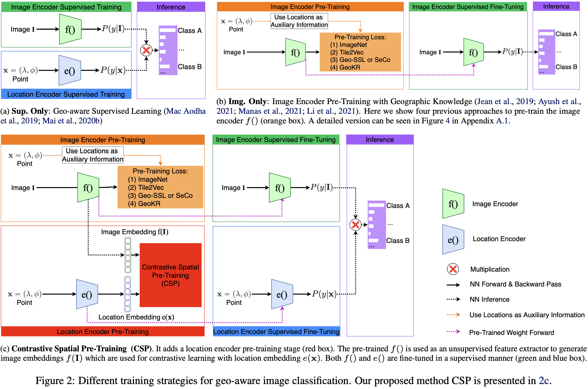
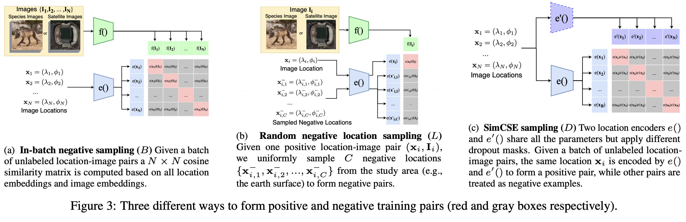

To be appeared at the Fortieth International Conference on Machine Learning (ICML 2023), Jul 23 - 29, 2023, Honolulu, Hawaii, USA.
Geo-tagged images are publicly available in large quantities, whereas labels such as object classes are rather scarce and expensive to collect. Meanwhile, contrastive learning has achieved tremendous success in various natural image and language tasks with limited labeled data. However, existing methods fail to fully leverage geospatial information, which can be paramount to distinguishing objects that are visually similar.
To directly leverage the abundant geospatial information associated with images in pre-training, fine-tuning, and inference stages, we present Contrastive Spatial Pre-Training (CSP), a self-supervised learning framework for geo-tagged images. We use a dual-encoder to separately encode the images and their corresponding geo-locations, and use contrastive objectives to learn effective location representations from images, which can be transferred to downstream supervised tasks such as image classification.
Experiments show that CSP can improve model performance on both iNat2018 and fMoW dataset. Especially, on iNat2018, CSP significantly boosts the model performance with 10-34% relative improvement with various labeled training data sampling ratios.


@inproceedings{mai2023csp,
title={CSP: Self-Supervised Contrastive Spatial Pre-Training for Geospatial-Visual Representations},
author={Mai, Gengchen and Lao, Ni and He, Yutong and Song, Jiaming and Ermon, Stefano},
booktitle={International Conference on Machine Learning},
year={2023},
organization={PMLR}
}